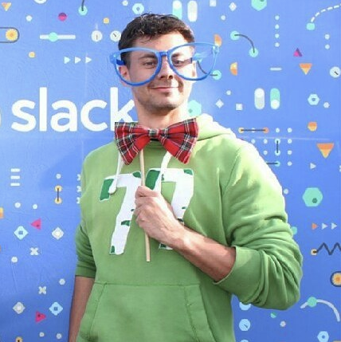
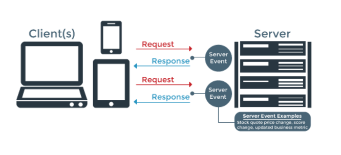

В отличие от HTTP - cоединение остается открытым

Konstantin Zolotarev
 Konstantin Zolotarev Langa Inc.
Langa Inc
Один из самых часто используемых вариантов Real Time - Polling Polling основан на протоколе HTTP. Это простые запросы с "задержкой" ответа
В отличие от HTTP - cоединение остается открытым
Socket.io основан на стандартной библиотеке Node.js events
И использует класс EventEmitter
var app = require('express')();
var http = require('http').Server(app);
var io = require('socket.io')(http);
app.get('/', function(req, res){
res.sendfile('index.html');
});
io.on('connection', function(socket){
console.log('a user connected');
});
http.listen(3000, function(){
console.log('listening on *:3000');
});
connectiondissconnectС версии 1.0 используется механизм middleware как в Express.js
io.use((socket, next) => {
/* ... */
next() // <-- если не вызвать, чуда не произойдет
})
Дальше сработает событие connection.
Слушатель которого получит socket - объект сокета с подключившимся клиентом
Так как срабатывания всех событий - асинхронное, они могут вызываться с любой последовательности. Отдельно для каждого клиента.
Все сообщения в сокетах будут получены как стандартные события класса EventEmmiter
socket.on('any-event', (data) => { /* ... */})
connection - подключение нового пользователяdisconnect - отключение конкретного пользователяerror - ошибка системыmessage - получение любого сообщенияreconnect - повторное подключение пользователяsocket.emit - отправка сообщения текущему пользователюsocket.broadcast.emit - всем, кроме текущего пользователяio.sockets.emit - всем пользователямio.to('room').emit - в каналSocket.io содержит систему каналов/комнат. Возможность объединять пользователей по какому-либо принципу.
Очень часто используется в играх/чатах
// Подключаем пользователя в канал
socket.join('custom')
// Отправляем сообщение в канал
io.to('custom').emit('event', { data: 1 })
// Всем кроме текущего пользователя в канале
socket.broadcast.to('custom').emit('user-added', user)
//Выходим из канала
socket.leave('custom')
При создании сервера, Socket.io автоматически создаст путь socket.io/socket.io.js И привяжет его к клиентской библиотеке Socket.io
// Подключаемся
var socket = io();
socket.on('connect', function(){ /* ... */ });
socket.on('message', function(msg){ /* ... */ });
socket.on('disconnect', function() { /* ... * / });
socket.send('Hello world!'); // send a message to server
socket.disconnect(); // Closes the connection
connect - подключениеdisconnect - отключениеerror - ошибка системыreconnect - повторное подключение пользователяsocket.emit - отправка сообщения текущему пользователюsocket.broadcast.emit - всем, кроме текущего пользователя